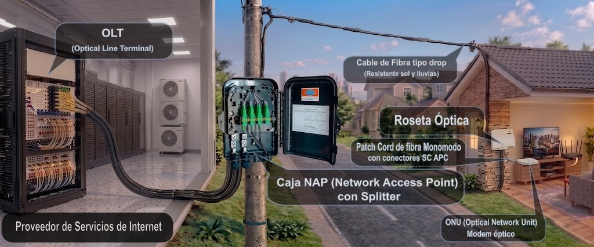
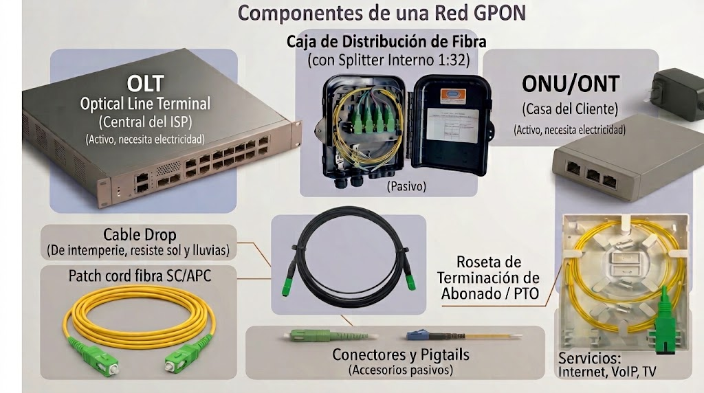

1. ¿Qué es GPON y por qué se usa en Venezuela?
GPON son las siglas de Gigabit Passive Optical Network (Red Óptica Pasiva con capacidad Gigabit). Es el estándar que utilizan prácticamente todos los ISP venezolanos (Inter, Movistar, Digitel, NetUno, etc.) para llevar Internet por fibra hasta los hogares.
Concepto clave: Red Pasiva
Se llama "pasiva" porque entre la central del ISP y tu casa no hay equipos eléctricos que amplifiquen la señal. Solo hay fibra óptica y divisores (splitters) que reparten la luz. Esto reduce costos, consumo eléctrico y puntos de falla.
En una red GPON, una sola fibra que sale de la central puede dar servicio a hasta 128 clientes mediante divisores ópticos. Esto es lo que hace que el Internet por fibra sea mucho más económico y rápido que las antiguas redes de cobre (ADSL).

2. Componentes de una Red GPON
Una red GPON se compone de tres elementos principales. Es fundamental que los estudiantes identifiquen cada uno y sepan dónde se ubican físicamente.
OLT (Optical Line Terminal)
Es el equipo que está en la central del ISP. Actúa como el "cerebro" de la red: envía y recibe la señal óptica, gestiona el ancho de banda de todos los clientes y se conecta a Internet. Una OLT puede tener varios puertos PON, y cada puerto puede dar servicio a cientos de clientes.
Splitter Óptico (Divisor)
Es un componente pasivo (no necesita electricidad) que divide la señal de una fibra en varias. Por ejemplo, un splitter 1:32 toma la señal de una fibra y la reparte a 32 clientes. Se ubica en las NAP (cajas en postes o paredes) o en cajas de distribución.
ONU / ONT (Optical Network Unit / Terminal)
Es el módem óptico que se instala en la casa del cliente. Convierte la señal de luz en señal eléctrica (Ethernet RJ45) y Wi-Fi. Sin la ONU, no hay Internet en la casa.
| Equipo | Ubicación | Función | ¿Necesita electricidad? |
|---|---|---|---|
| OLT | Central del ISP | Gestiona la red y da salida a Internet | Sí |
| Splitter | NAP / Caja de distribución | Divide la señal óptica | No (pasivo) |
| ONU/ONT | Casa del cliente | Convierte luz a Ethernet/Wi-Fi | Sí |

3. Arquitectura FTTH Residencial (Paso a Paso)
Así se conecta un cliente residencial en Venezuela. Este es el recorrido que hace la fibra desde la central hasta la casa:
Central ISP
NAP
Poste a casa
PTO
Módem óptico
- OLT: Envía la señal óptica por una fibra principal.
- Splitter: Reparte la señal a varios clientes (ej: 1:32).
- NAP: Caja en el poste donde se conecta el cable del cliente.
- Cable Drop: Fibra autosoportada (2 hilos) desde la NAP hasta la casa.
- Roseta Óptica (PTO): Punto terminal dentro de la casa. Aquí se fusiona el hilo activo con un pigtail SC/APC.
- ONU/ONT: Se conecta a la roseta con un patch cord y convierte la señal a Ethernet/Wi-Fi.
Figura 3: Recorrido completo de la fibra desde la central hasta el hogar.
4. Conectores y Pulido: APC vs UPC
En las redes GPON venezolanas, los conectores más utilizados son SC/APC (verde) en la planta externa y SC/UPC (azul) en interiores. Es crucial que los estudiantes entiendan la diferencia y por qué nunca se deben mezclar.
SC/APC (Verde)
Pulido en ángulo de 8°. Se usa en la planta externa: NAP, rosetas, splitters y puerto PON de la ONU. Su pulido inclinado reduce la reflexión de la luz, lo que es crítico para GPON.
SC/UPC (Azul)
Pulido esférico. Se usa en interiores: patch cords que conectan la ONU a equipos activos, puertos de OLT y switches.
| Pulido | Color | Pérdida de Retorno | Uso en ISP Venezolanos |
|---|---|---|---|
| APC | Verde | ≤ -60 dB | Planta externa: NAP, rosetas, splitters, ONU. |
| UPC | Azul | -40 dB a -55 dB | Interiores: patch cords, OLT, switches. |
Figura 4: Diferencias entre el pulido APC (ángulo) y UPC (esférico).
5. Cómo viaja la señal en GPON (Downstream y Upstream)
Este es el concepto más técnico, pero es importante que los estudiantes entiendan que la señal viaja de forma diferente en cada dirección.
Downstream (Bajada: OLT → ONU)
La OLT envía los datos a todas las ONUs al mismo tiempo. Cada ONU filtra los datos que le corresponden mediante un identificador llamado GEM Port ID. Es como si la OLT gritara un mensaje y cada ONU solo escuchara lo que le interesa.
- Longitud de onda: 1480 – 1500 nm.
- Modo: Continuo (siempre hay señal).
Upstream (Subida: ONU → OLT)
Aquí está la clave de GPON: las ONUs no pueden transmitir al mismo tiempo, porque sus señales chocarían. La OLT asigna turnos de tiempo (TDMA) a cada ONU. Solo la ONU que tiene el turno puede transmitir. Esto se llama TDMA (Time Division Multiple Access).
- Longitud de onda: 1290 – 1330 nm.
- Modo: Ráfagas (solo cuando tiene turno).
Concepto clave: Ranging
Como cada ONU está a diferente distancia de la OLT, la OLT debe medir el tiempo de ida y vuelta (RTD) para asignar los turnos correctamente. Este proceso se llama Ranging y evita colisiones en la fibra.
Figura 5: Downstream continuo vs Upstream en ráfagas (TDMA).
6. GPON vs. EPON: Lo que usan los ISP Venezolanos
En Venezuela, la tecnología dominante es GPON (ITU-T G.984). EPON casi no se usa en redes nuevas.
| Parámetro | GPON | EPON |
|---|---|---|
| Estándar | ITU-T G.984 | IEEE 802.3ah |
| Bajada | 2.488 Gbps | 1.25 Gbps |
| Subida | 1.244 Gbps | 1.25 Gbps |
| Splitter | Hasta 1:128 | Hasta 1:64 |
| Uso en Venezuela | Estándar en ISP (Inter, Movistar, Digitel, etc.) | Muy raro, solo en redes antiguas. |
Figura 6: Comparativa visual entre GPON (dominante) y EPON (obsoleto en Venezuela).
7. Transceptores y Equipos Activos
Los transceptores son módulos que se insertan en OLT, switches y ONUs para convertir señales. Es importante que los estudiantes sepan identificarlos.
- SFP GPON: Módulo para puerto PON de OLT. Hasta 2.5 Gbps. Conector SC/APC o SC/UPC.
- SFP+: Para enlaces de 10 Gbps entre OLT y switches. Conector LC.
- Media Converter: Convierte fibra a cobre (RJ45). Se usa en instalaciones antiguas o para clientes empresariales.
- ONU/ONT: Equipo en casa del cliente. Convierte GPON a Ethernet y Wi-Fi.
Figura 7: Módulos SFP, SFP+ y equipos activos usados en redes GPON.
8. Actividad Práctica para el Aula
Ejercicio: Identificación de Componentes
Objetivo: Que los estudiantes identifiquen los componentes de una red GPON y su ubicación.
- Divide la clase en grupos de 3-4 estudiantes.
- Entrega a cada grupo una imagen de una instalación FTTH real (o el diagrama de esta guía).
- Cada grupo debe identificar:
- Dónde está la OLT, el splitter, la NAP, la roseta y la ONU.
- Qué tipo de conector se usa en cada tramo (APC o UPC).
- Qué longitud de onda viaja en cada dirección (downstream/upstream).
- Al final, cada grupo expone sus respuestas y se discute en clase.
Pregunta de reflexión: ¿Por qué crees que en Venezuela se usa GPON y no EPON? ¿Qué ventajas tiene GPON para los ISP?
Figura 8: Resumen visual de la actividad práctica para el aula.